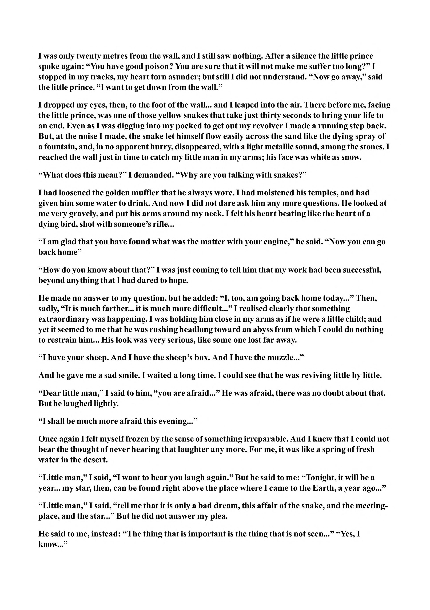

I was only twenty metres from the wall, and I still saw nothing. After a silence the little prince spoke again: “You have good poison? You are sure that it will not make me suffer too long?” I stopped in my tracks, my heart torn asunder; but still I did not understand. “Now go away,” said the little prince. “I want to get down from the wall.” I dropped my eyes, then, to the foot of the wall... and I leaped into the air. There before me, facing the little prince, was one of those yellow snakes that take just thirty seconds to bring your life to an end. Even as I was digging into my pocked to get out my revolver I made a running step back. But, at the noise I made, the snake let himself flow easily across the sand like the dying spray of a fountain, and, in no apparent hurry, disappeared, with a light metallic sound, among the stones. I reached the wall just in time to catch my little man in my arms; his face was white as snow. “What does this mean?” I demanded. “Why are you talking with snakes?” I had loosened the golden muffler that he always wore. I had moistened his temples, and had given him some water to drink. And now I did not dare ask him any more questions. He looked at me very gravely, and put his arms around my neck. I felt his heart beating like the heart of a dying bird, shot with someone’s rifle... “I am glad that you have found what was the matter with your engine,” he said. “Now you can go back home” “How do you know about that?” I was just coming to tell him that my work had been successful, beyond anything that I had dared to hope. He made no answer to my question, but he added: “I, too, am going back home today...” Then, sadly, “It is much farther... it is much more difficult...” I realised clearly that something extraordinary was happening. I was holding him close in my arms as if he were a little child; and yet it seemed to me that he was rushing headlong toward an abyss from which I could do nothing to restrain him... His look was very serious, like some one lost far away. “I have your sheep. And I have the sheep’s box. And I have the muzzle...” And he gave me a sad smile. I waited a long time. I could see that he was reviving little by little. “Dear little man,” I said to him, “you are afraid...” He was afraid, there was no doubt about that. But he laughed lightly. “I shall be much more afraid this evening...” Once again I felt myself frozen by the sense of something irreparable. And I knew that I could not bear the thought of never hearing that laughter any more. For me, it was like a spring of fresh water in the desert. “Little man,” I said, “I want to hear you laugh again.” But he said to me: “Tonight, it will be a year... my star, then, can be found right above the place where I came to the Earth, a year ago...” “Little man,” I said, “tell me that it is only a bad dream, this affair of the snake, and the meetingplace, and the star...” But he did not answer my plea. He said to me, instead: “The thing that is important is the thing that is not seen...” “Yes, I know...”
